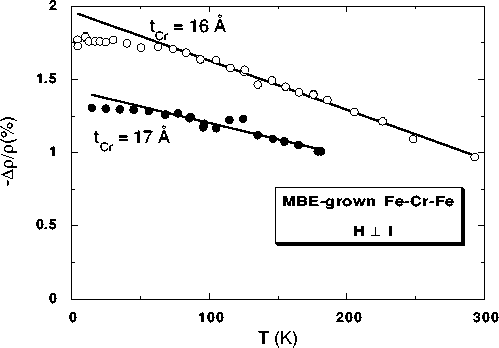
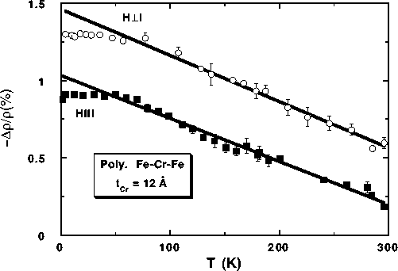

Figure 3: a) Temperature dependence of the
magnetoresistance for two types of Fe-Cr sandwiches. The
error bars represent the uncertainty due to temperature
drift. a) H perpendicular to I data for two MBE-grown
sandwiches. The fit parameters are: -Dr/r(T) = 2.0% -
(3.3x10-3 %/K)×T for the tCr =
16Å sample, and -Dr/r(T) = 1.4% - (2.2x10-3
%/K)×T for the tCr = 17 Å sample.

b) H||I and H perpendicular to I data for an evaporated
polycrystalline Fe-Cr sandwich with tCr =
12Å. Both applied field directions are in the plane of
the films. For H perpendicular to I, the fit is -Dr/r(T) =
1.5% - (3.0x10-3 %/K)×T, while for H||I it
is -Dr/r(T) = 1.0% - (2.8x10-3 %/K)×T.